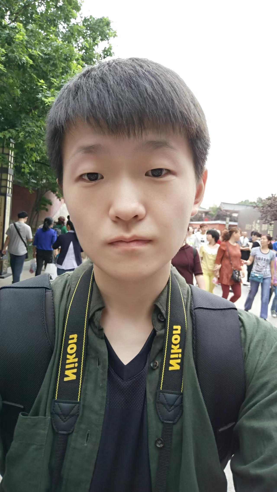

Algorithm Engineer of ASR Microelectronics Co., Ltd.

I am currently an Algorithm Engineer of ASR Microelectronics Co., Ltd.. I graduated with a Master in Communication Engineering from University of Electronic Science and Technology of China in June 2023 (from 2020 sep to 2023 june).
In 2020, I earned my Bachelor’s degree in Telecommunications Engineering from Chongqing University of Posts and Telecommunications, and was directly admitted without examination (a privilege extended to the top 3% of students) to the University of Electronic Science and Technology of China. During my time at Chongqing University of Posts and Telecommunications, I received the top prize in the Chongqing regional "Challenge Cup" - the 16th National College Students' Extracurricular Academic Science and Technology Contest, as well as a second prize nationally. I was also awarded multiple scholarships for scientific innovation. While at the University of Electronic Science and Technology of China, I received the first-class academic scholarship for the 2022 academic year, awarded to the top 15% of students.
My research interests include visual question answering, particularly the issue of language bias in visual question answering, and image quality assessment. I have published papers in relevant journals and conferences, such as ICASSP and IJCNN, and have served as a reviewer for academic journals and conferences like TCSVT and ACM MM.